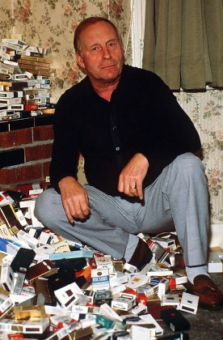
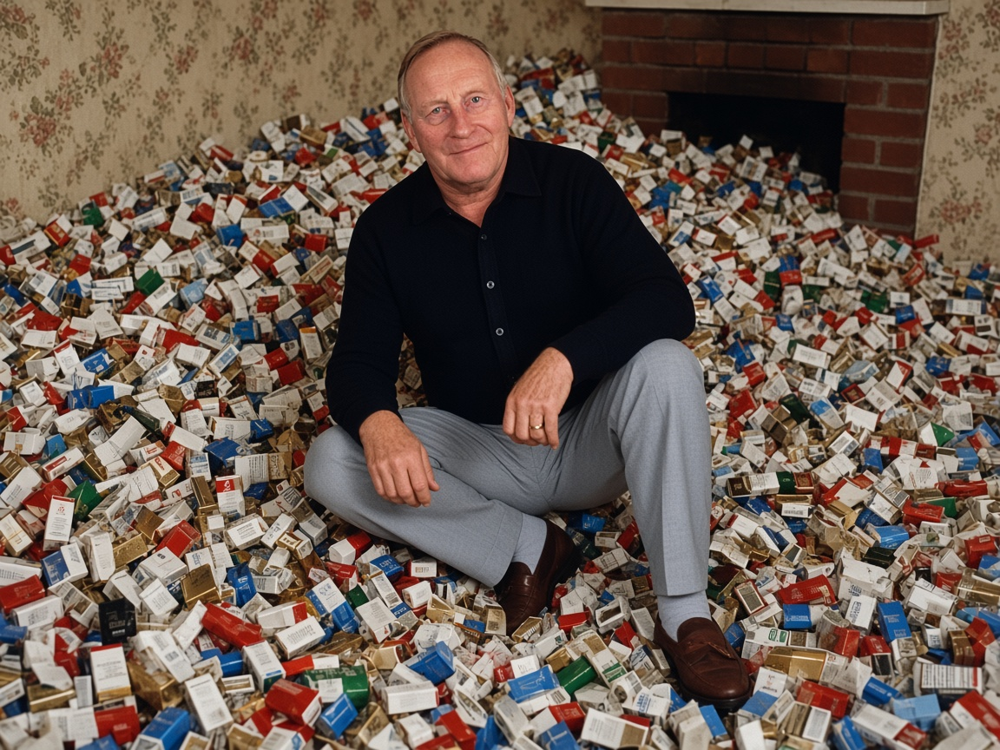
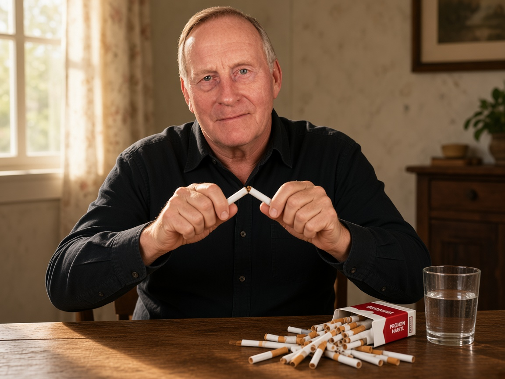
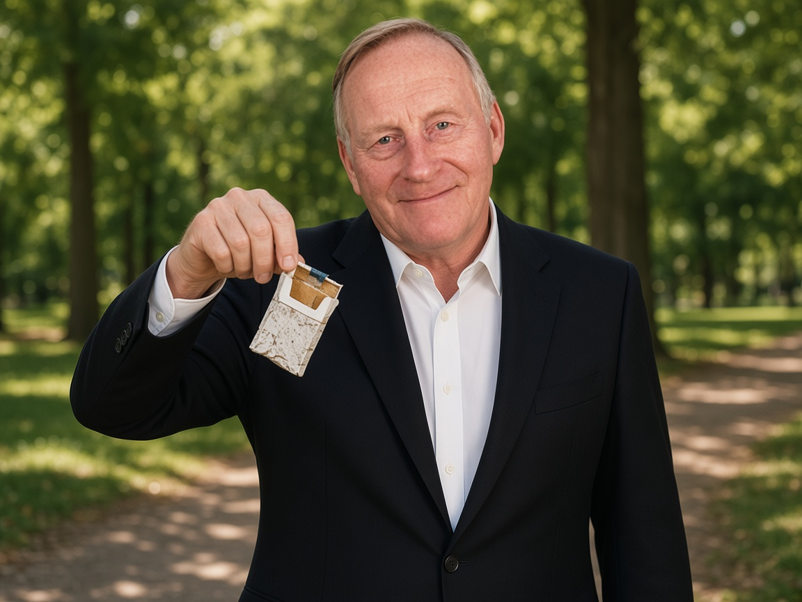
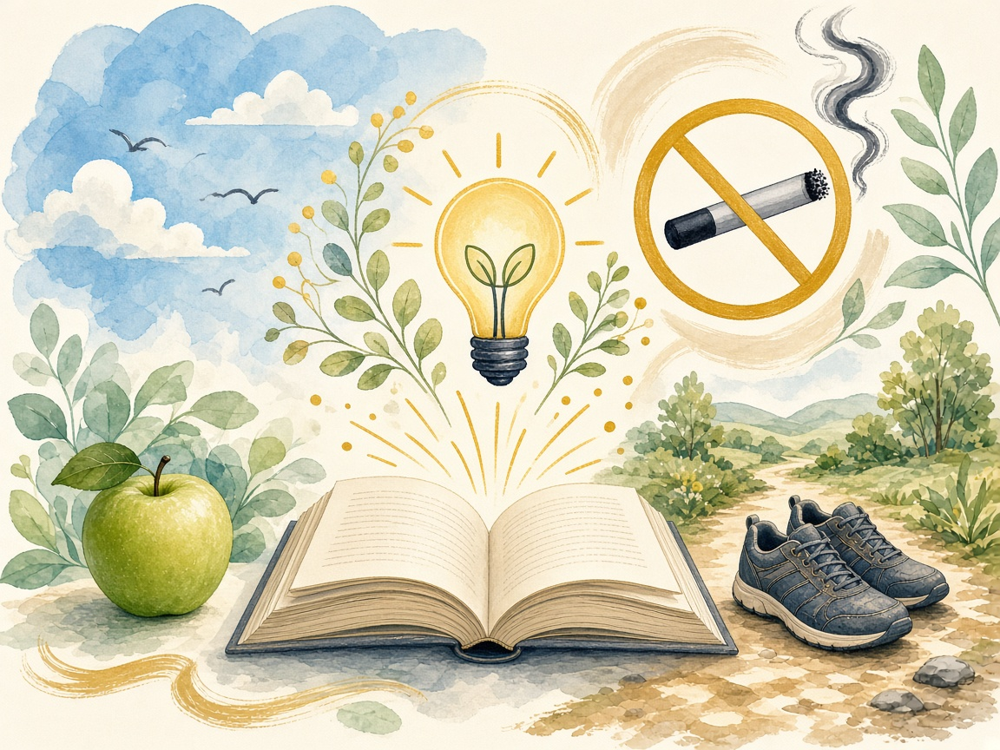

Allen Carr
The Easy Way to Stop Smoking
See the nicotine trap clearly — then walk out smiling, without willpower wars.
Little nicotine monsters hate this part
Click the cigarette. Watch the illusion crack. That’s the Easy Way energy.
The real Allen Carr — accountant, ex–100-a-day smoker, Easy Way inventor.
Allen Carr, the accidental liberator
For over thirty years he smoked — at peak around a hundred a day — failing the usual ways: cutting down, willpower, substitutes. Then the insight behind The Easy Way to Stop Smoking landed: he wasn’t about to lose a pleasure. He was escaping a nicotine trap that only relieved the discomfort it created.
- Chain-smoker to free — without mourning the cigarette
- 1985 bestseller — Easy Way ideas taught in clinics worldwide
- No scare-first pitch — kill the illusions, then stop cheerfully
Easyway insight: you light up to feel, briefly, like the non-smoker you already want to be.
Allen vs. the cigarette mountain
The man who beat the pack — photographed (and playfully reimagined) in the middle of the mess.




The smoking trap, in three beats
Allen’s genius was making the invisible mechanism obvious — and a bit ridiculous.
-
01
Nicotine creates the itch
As the dose fades, a mild empty restlessness appears — Carr’s “pangs.” Life didn’t cause it. The last cigarette did.
-
02
The cigarette “cures” it
You smoke. Relief arrives. The brain files a false report: cigarettes help with stress, focus, courage, boredom.
-
03
Brainwashing seals it
“Quitting is misery.” “I’ll always miss it.” “Just one won’t hurt.” Those stories are the trap’s sleeping partner.
The Easy Way isn’t harder willpower
Willpower says “I want it but I can’t have it.” Easy Way says “I don’t want it — it never gave me anything.” Keep smoking while you dismantle the illusions, skip nicotine crutches that keep the drug story alive, then put out the final cigarette as a celebration — freedom starts there, not after a grim probation month.
- Question every “benefit” (stress, focus, social ease, reward)
- Don’t cut down — that crowns each leftover cigarette as precious
- Never “just one” later; don’t envy smokers — pity the trap

Your escape path
Don’t sit through 39 slides. Smash the illusions that keep you lighting up — then practice freedom.
0 / 12 illusions cleared · keep going until smoking looks silly
Myth smash
Tap every line you’ve told yourself. Watch the Easy Way truth flip it.
0 myths smashed
When do you “need” one?
Pick the moments that own you. We’ll reframe them the Easy Way — no scare tactics.
Coach note
What are you actually giving up?
Carr’s favorite audit: list the advantages of smoking. Honest ones evaporate fast.
Tap a “benefit” smokers claim. We’ll cross-examine it.
Empty list. You’re not giving up a treasure — you’re firing a parasite.
Final cigarette ritual
Practice the ending before the real one. Conscious. Cheerful. No funeral vibes.
When you’re ready, begin. Keep smoking in real life until your illusions are gone — this is rehearsal.
Dig deeper (optional)
Short Easy Way topic cards if you want more — open only what you’re curious about.
Freedom starts when the last cigarette dies — not after a probation month.
You’re already a non-smoker the moment you put it out with relief. Protect that understanding. For the complete original method, read the book or visit an Easyway centre.
Practice the final cigarette